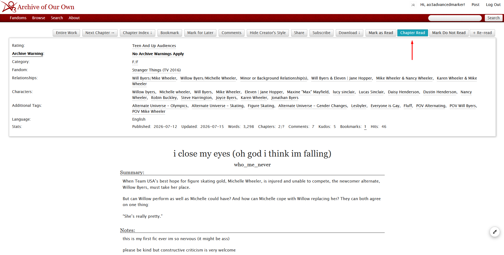
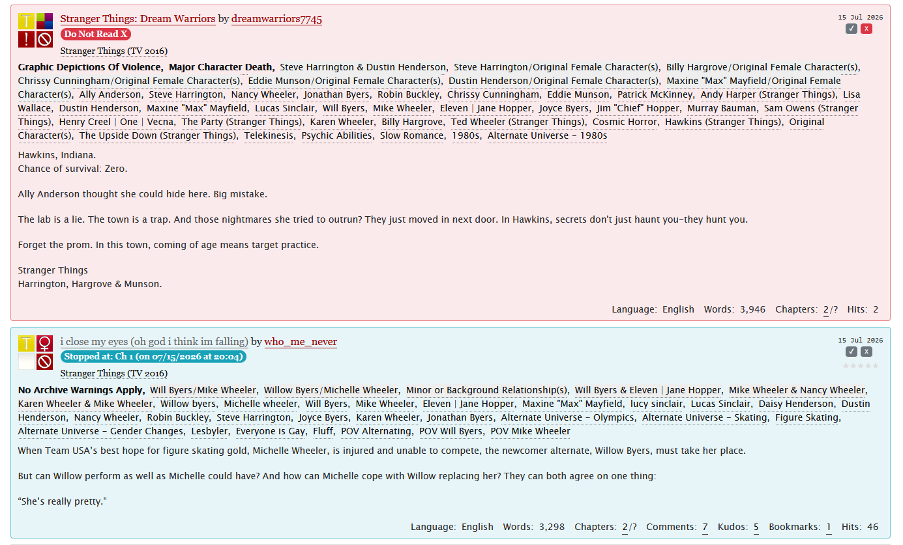
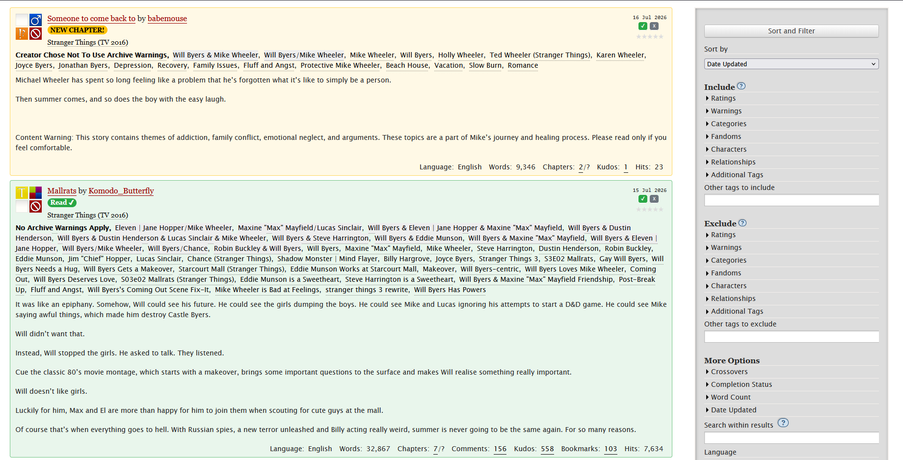
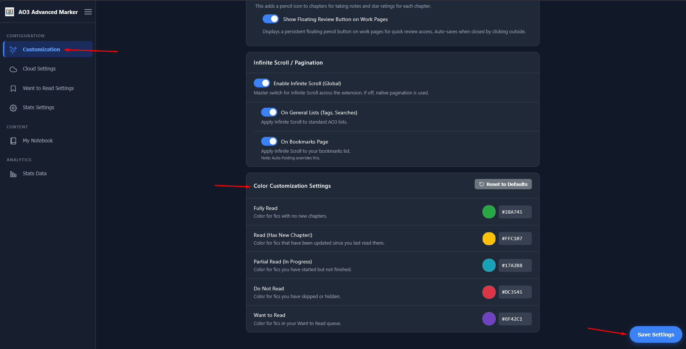

The AO3 Advanced Marker relies on a color-coded system to help you visually track your reading progress across the Archive. This guide explains how the system works, where the colors appear, and how you can personalize them.
How the Color System Works
The extension uses 5 distinct color states to identify the status of any fanfiction on AO3. These states are mutually exclusive (a work can only have one status at a time):
- Read (Default: Green): You have fully read the work.
- Partial (Default: Teal): You are currently reading the work and stopped at a specific chapter.
- Updated (Default: Yellow): A work you previously marked as "Read" has a new chapter available.
- Do Not Read (Default: Red): You have marked the work to be avoided.
- Want to Read (Default: Purple) [PRO]: You have added the work to your reading queue.
Where the Colors are Applied
The color system visually transforms the AO3 interface in two primary locations:
A. Work Page Buttons
When you open a specific fanfiction, the extension injects action buttons at the top and bottom of the page. The backgrounds of these buttons reflect the active color status:
- The "Mark as Read" button turns Green when active.
- The "Chapter Read" button turns Teal to indicate partial progress.
- The "Mark Do Not Read" button turns Red.
- The "Remove from WTR" button turns Purple.

B. Listing and Bookmark Blurbs
When browsing AO3 (Search Results, Tag Pages, User Bookmarks), the extension applies the colors directly to the work "blurbs" (the descriptive boxes for each fic):
- The entire background of the blurb gets a soft tint of the respective status color.
- A bright, colored badge appears on the blurb to clearly state the status (e.g., a Teal badge saying "Stopped at: Ch 3", or a Yellow badge saying "NEW CHAPTER!").
- The "Want to Read" SVG bookmark icon lights up in Purple when active.


How to Configure Your Colors
You can change the default colors at any time to match your personal aesthetic or accessibility needs.
Step 3.1 — Access the Options Dashboard
Click on the AO3 Advanced Marker extension icon in your browser toolbar to open the Options Page.
Step 3.2 — Navigate to the Customization Panel
In the left sidebar of the Options Page, click on the Customization tab. Once on this screen, scroll down to the Color Customizations Settings section.

Step 3.3 — Personalize the Palette
You have two ways to change the colors:
- Native Color Picker: Click on the color swatch next to the status name to open your operating system's default color selector.
- HEX Input: If you have a specific color in mind, you can type its HEX code (e.g.,
#ff00ff) directly into the text field. The extension includes validation to ensure the code is valid!
Once you make your changes, click the Save Settings button at the bottom of the screen. Your new colors will be applied immediately the next time you load an AO3 page.
Step 3.4 — Restoring the Default Colors
If you ever want to revert back to the original color palette, simply click the Reset to Defaults button located at the bottom of the Color Customizations Settings section. Remember to click Save Settings afterwards to apply the reset!
If you have Cloud Sync enabled (via JSONBin or Google Drive), your custom colors will automatically be synced across all your devices!